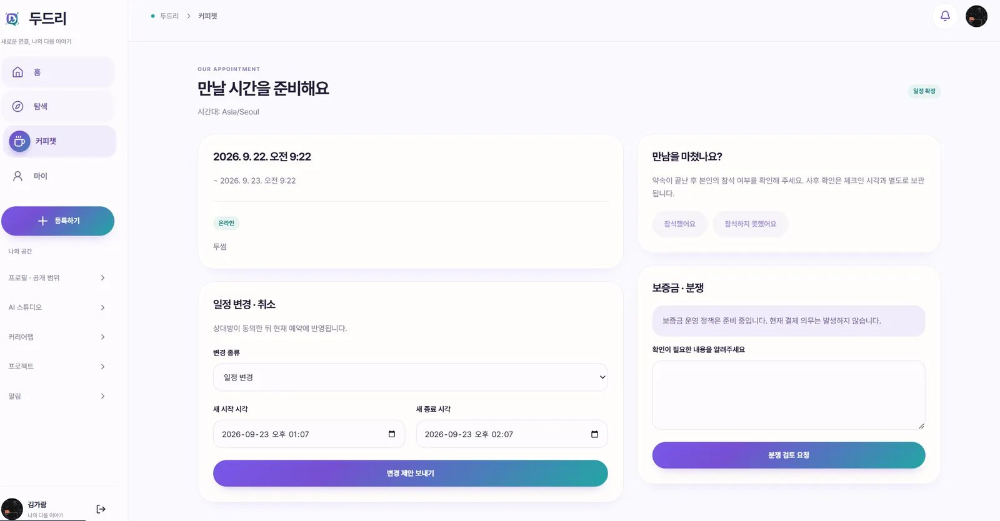

두드리
AI 네이티브 + 애자일 워크플로우로 하루 만에 만든 캠퍼스 서비스
같은 학교에서 팀원을 찾아도 전공과 학년만으로는 그 학생이 무엇을 해 봤는지 알기 어려웠습니다. 학생이 경험을 정리해 공개하면 그 소개를 읽은 동문이 커피챗을 요청하는 서비스를 해커톤에서 만들었습니다.

AI 네이티브 + 애자일 워크플로우로 하루 만에 만든 캠퍼스 서비스
같은 학교에서 팀원을 찾아도 전공과 학년만으로는 그 학생이 무엇을 해 봤는지 알기 어려웠습니다. 학생이 경험을 정리해 공개하면 그 소개를 읽은 동문이 커피챗을 요청하는 서비스를 해커톤에서 만들었습니다.
